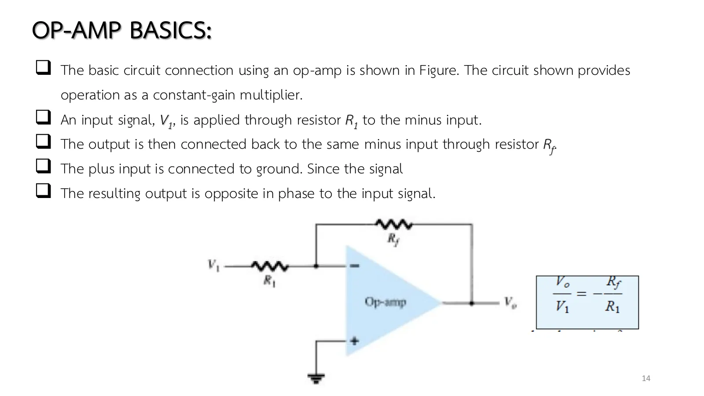
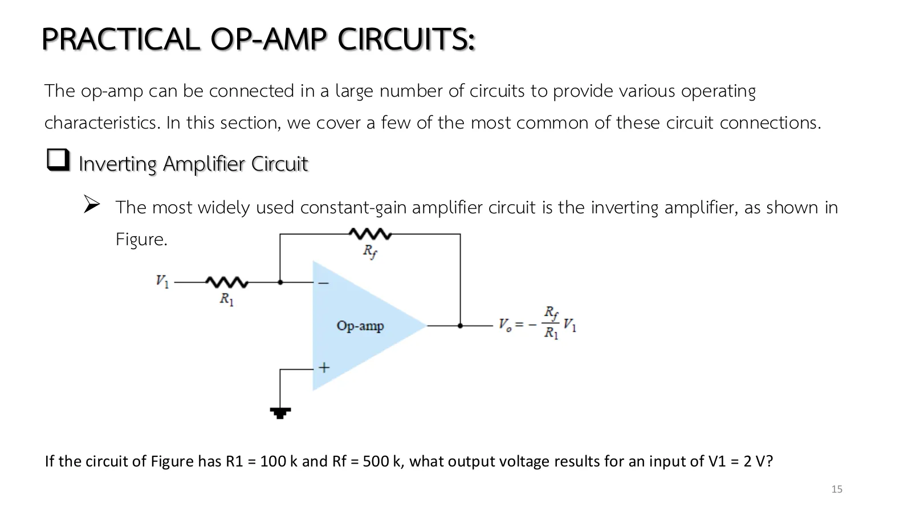
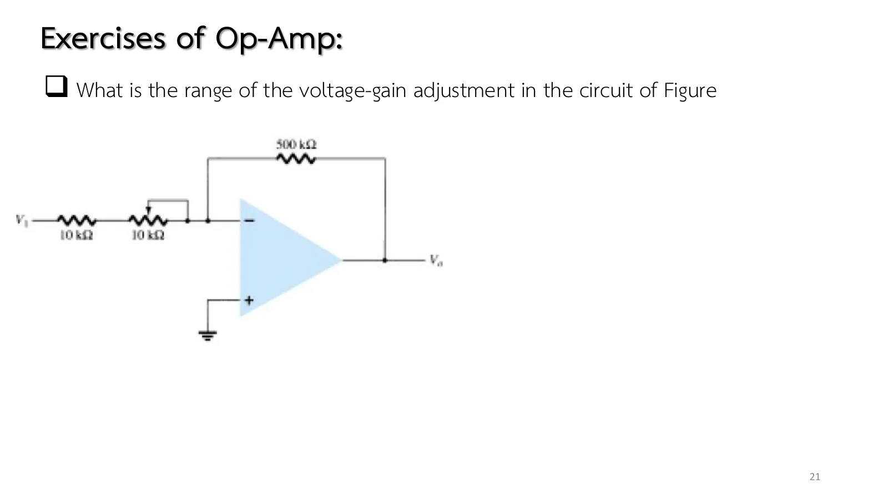
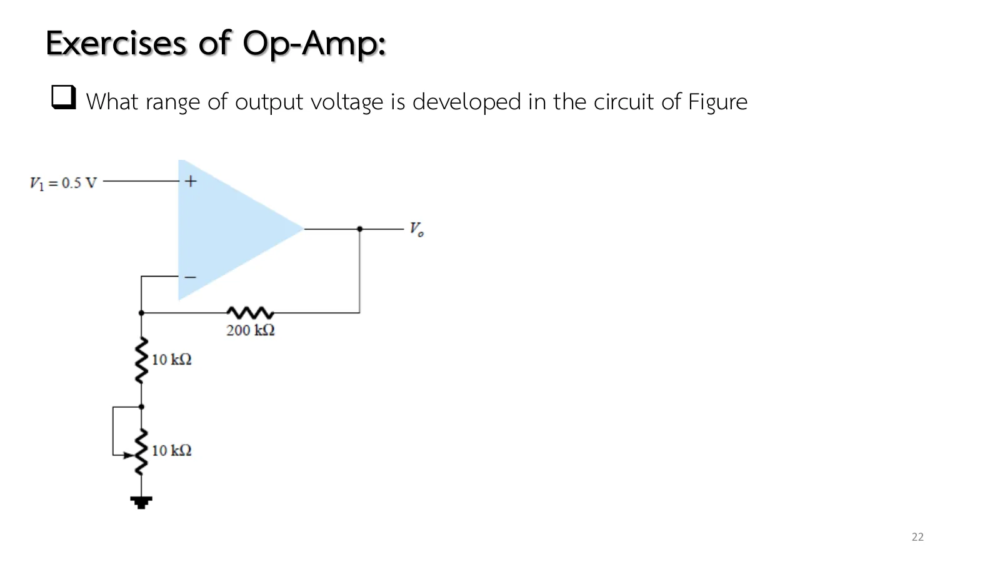
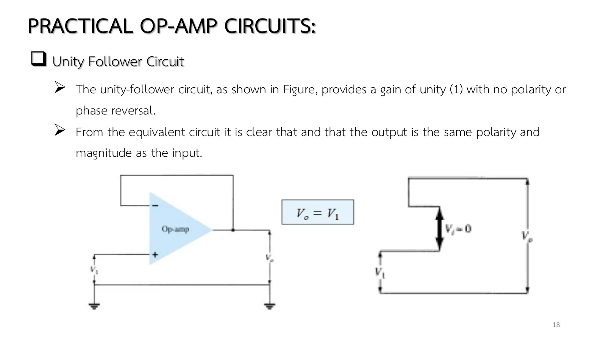

A gain of two hundred thousand sounds great until you find that an input of only 100 µV already drives the output into a rail, and that this gain drifts with temperature and from one IC to the next. The way out is to give most of it away: feed the output back to the − input through a resistor (negative feedback), and the gain shrinks to the ratio of two resistors, which is accurate and steady. This page builds the inverting amplifier, the noninverting amplifier and the unity follower, then gives them a tuning knob (chapter 7 slides, set 1, pp. 14–18 and exercises pp. 21–22; Boylestad sections 10.4–10.5).
The two rules of an op-amp with negative feedback: (1) the input terminals draw no current (\(R_i\) is very high); (2) \(V_+ \approx V_-\), because \(V_o = AV_i\) and \(V_o\) is bounded (\(\pm V_{sat}\)) while \(A\) is huge: \(V_i\) never exceeds 13 V/2 × 10⁵ = 65 µV.
The inverting amplifier (pp. 14–15, Figs. 10.33–10.34, Eq. 10.8): the + input is grounded, so the − input is a virtual ground; the current \(V_1/R_1\) flows entirely through \(R_f\), and \(V_o = -(R_f/R_1)V_1\). Example 10.5: −10 V. The gain is negative and may be below 1.
The noninverting amplifier (pp. 16–17, Fig. 10.35, Eq. 10.9): \(V_1\) enters the + input and the − input follows it; the \(R_1\)–\(R_f\) divider from the output must deliver \(V_1\) at the − input, so \(V_o = (1 + R_f/R_1)V_1\). Example 10.6: 12 V. The gain is never below 1, and the source supplies no current.
The unity follower (p. 18, Fig. 10.36, Eq. 10.10): the output is tied straight to the − input; gain 1, no inversion. Used as a buffer: high input resistance, low output resistance (an emitter follower without the lost 0.7 V).
Limits: the formulas hold only while \(|V_o| < V_{sat}\) ≈ 13 V; beyond that the output clips (section A: the transfer graph bends flat). The true closed-loop gain is \(-\frac{R_f/R_1}{1 + (1 + R_f/R_1)/A}\), closer to the formula the larger \(A\).
A potentiometer in \(R_1\) (pp. 21–22): the inverting circuit adjusts from −50 to −25, the noninverting one gives 10.5 down to 5.5 V.
Slide p. 14 feeds \(V_1\) through \(R_1\) into the − input and connects \(R_f\) from the output back to the same input. The output adjusts itself until the voltage between the inputs is only \(V_o/A\), practically zero, so the − input becomes a virtual ground although it is not tied to ground.
The result is \(V_o/V_1 = -R_f/R_1\): the op-amp's own number drops out of the formula, leaving two resistors, and the minus sign says the output is inverted.

สไลด์หน้า 14: การต่อพื้นฐาน \(V_o/V_1 = -R_f/R_1\) (รูป 10.33)Slide p. 14: the basic connection, \(V_o/V_1 = -R_f/R_1\) (Fig. 10.33)
The simulations use an op-amp with \(A\) = 2 × 10⁵ and \(V_{sat}\) = ±13 V; the current dots vanish into the op-amp at its output because that current returns through the supply rails, which are not drawn.
Choose a circuit, then move \(V_1\), \(R_1\), \(R_f\) and the open-loop gain \(A\). The lower graph is the output against the input from the engine: a line of slope \(-R_f/R_1\) or \(1 + R_f/R_1\) that bends flat at the ±13 V rails. Lower \(A\) to 100 and see how far the real gain falls short of the formula. Hover over the op-amp to read \(V_d\), and notice that in the noninverting circuit the source carries no dots.
Slide p. 15 calls this the most widely used constant-gain amplifier and asks what output \(R_1\) = 100 kΩ, \(R_f\) = 500 kΩ and \(V_1\) = 2 V give.
A way to think that needs no formula: the − input sits at zero volts, so the current in \(R_1\) follows at once; the op-amp input takes no current, so all of it must continue through \(R_f\). Before opening the solution, guess whether the output is positive or negative, and how many times larger than the input.

สไลด์หน้า 15: วงจรกลับเฟสและโจทย์ Example 10.5Slide p. 15: the inverting amplifier and Example 10.5
↓ โจทย์ 1: Example 10.5
↓ Problem 1: Example 10.5
1
Example 10.5: วงจรกลับเฟส
Example 10.5: the inverting amplifier
สไลด์หน้า 14–15 · Boylestad Example 10.5 (รูป 10.34, สมการ 10.8)
Slides pp. 14–15 · Boylestad Example 10.5 (Fig. 10.34, Eq. 10.8)
สไลด์หน้า 17 ใช้ตัวต้านทานชุดเดิมของ Example 10.5 ลองเทียบในใจก่อนว่าคำตอบจะต่างจากวงจรกลับเฟสอย่างไรทั้งขนาดและเครื่องหมาย
Move the signal to the + input and let \(R_1\) and \(R_f\) divide the output back to the − input (slide p. 16). The − input must keep up with the + input, which gives \(V_o/V_1 = 1 + R_f/R_1\): the output is not inverted and the gain can never fall below one. The slide adds that the inverting connection is more widely used because of its better frequency stability.
Slide p. 17 uses the same resistors as Example 10.5. Compare in your head first how the answer will differ from the inverting one, in size and in sign.
The two exercises of slides pp. 21–22 put a 10 kΩ potentiometer in series with \(R_1\) = 10 kΩ. Problem 2 is an inverting amplifier with \(R_f\) = 500 kΩ and asks for the range of gain; Problem 7 is a noninverting one with \(R_f\) = 200 kΩ and \(V_1\) = 0.5 V and asks for the range of output.
The trick is to think only of the two ends: at one end the total \(R_1\) is 10 kΩ, at the other 20 kΩ. Find first which end gives the larger gain.

สไลด์หน้า 21: โจทย์ข้อ 2 (รูป 10.63)Slide p. 21: Problem 2 (Fig. 10.63)

สไลด์หน้า 22: โจทย์ข้อ 7 (รูป 10.67)Slide p. 22: Problem 7 (Fig. 10.67)
The slides give no solutions: pp. 15 and 17 are Examples 10.5–10.6, pp. 21–22 are Problems 2 and 7 at the end of the book's chapter 10 (the practice box uses Problems 4–6). Problem 3 on this page needs a source for an output to show, so \(V_1\) = 0.2 V is this page's choice (the problem asks only for the gain range).
An inverting amplifier has \(R_1\) = 10 kΩ in series with a 10 kΩ potentiometer, and \(R_f\) = 500 kΩ. What is the range of the voltage-gain adjustment? (The simulation uses \(V_1\) = 0.2 V.)
แถบเลื่อนด้านล่างหมุนโพเทนชิออมิเตอร์ ลองตอบก่อน
The slider below turns the potentiometer. Try it first.
4
ข้อ 7: ช่วงขาออกของวงจรไม่กลับเฟส
Problem 7: the output range of a noninverting amplifier
Connect the output straight back to the − input (slide p. 18) and \(V_o = V_1\): the same size and polarity in every respect. It sounds useless, but the input draws no current while the output can deliver all the current the load needs.
Problem 5 shows why that matters: a source with 10 kΩ inside driving a 1 kΩ load directly loses most of its voltage. Guess how much is left, then see the follower in between give the load the full voltage.

สไลด์หน้า 18: ตัวตามแรงดัน \(V_o = V_1\) (รูป 10.36)Slide p. 18: the unity follower, \(V_o = V_1\) (Fig. 10.36)
A 2 V source with an internal resistance \(R_s\) = 10 kΩ drives a load \(R_L\) = 1 kΩ through a unity follower. Find \(V_o\), and compare with connecting the load to the source directly.
Inverting, \(R_f/R_1\) = 5: move \(V_1\) from 0 to 3 V. The output walks down the −5 line to −13 V at \(V_1\) = 2.6 V and stops; the badge says "saturated" and \(V_-\) is no longer a virtual ground (hover over the op-amp: \(V_d\) grows to millivolts).
Lower \(A\) to 100: the real gain is −5/(1 + 6/100) = −4.72. The book assumes an infinite \(A\); real op-amps have \(A\) ≥ 10⁵, so the formula is very close.
Noninverting: set \(R_f\) = 0 (slider fully left): gain 1, the unity follower. Make \(R_1\) very large: the gain again approaches 1. It can never go below 1.
Try this 2 — problems 1–5
Problems 1 and 2 use the same resistors yet give −5 and +6: in the noninverting circuit the current of \(R_1\) comes from the output, not from the source (the source carries no dots).
Problem 3: turn the potentiometer to 0 % and imagine \(V_1\) = 0.3 V: a gain of −50 would want −15 V, beyond the rail; the gain range is usable only for inputs up to 0.26 V.
Problem 5: remove the follower in your head: the 1 kΩ load and \(R_s\) = 10 kΩ form a divider leaving 0.18 V. That is what a high input resistance and a low output resistance are worth.
Chapter 7 slide set I, pp. 13–18, 21–22 · Boylestad & Nashelsky, 11th ed., §10.4 (Fig. 10.33) and §10.5 (Figs. 10.34–10.36, Examples 10.5–10.6), Problems 2, 4–7